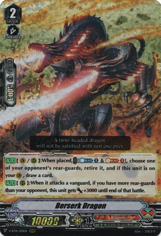
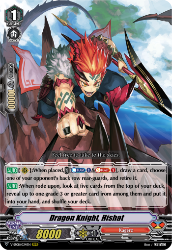

Created By: Scissoring Gwen
Last Updated: 10/26/2021
Overview
Overlord is a vanguard centric deck with an insane amount of pressure and consistency. Having access to Denial Griffin gives the deck a very good defense also. This is one of the few Premium decks that doesn’t need to stride in most games.
Core Cards

(1-3x) Dragonic Overlord "The X" (V-Series)
This is your main grade 3 ride. Gaining a Force 2 marker and being able to pressure multiple 2+ crit attacks makes this card a massive threat on your Grade 3 turn. In most cases it will clone Dragonic Overlord The End’s skill to be able to go 13k & 2 crit -> 23k & 2 crit -> 23k & 2 crit (if you go first then 3 drive checks total, if you go second then 4 drive checks total). This is more effective in Premium than in V-Premium because your opponent will have less shield in their deck due to G and D era cards being added in. It also counts cards in your hand from your skills as 0. This allows Dragonic Overlord The End’s first skill, Igniroad Dragon’s Power Boost, and Twin Buckler Dragon’s free perfect guard cost to activate no matter how big your hand is. In some cases you might want to not discard 3 from The End depending if your hand is good or your opponent can easily stop your aggression. You can instead either Stride or copy The End and only use his first ability to get 3 drive checks and 2 attacks.
(1-3x) Dragonic Overlord "The X" (Legion)
Dragonic Overlord The X is your finisher in the deck. When it Legions with Dragonic Overlord The End you will be able to add a copy of either The End or The X from your deck to hand. It allows you to condense your deck with triggers due to Legion putting triggers back into your deck, and your Legion skill adding a normal unit from your deck to your hand. The main reason why this version of The X is better than the other is because it doesn’t lose drive checks from The End’s skill. The End itself will lose the drive checks but The X is the one performing them, so you will get 3 high powered attacks that all have twin drive.
How Many Copies of Each "The X" Should You Use?
If you are new to the deck, it is best to start with 2 of each. You have multiple ways to search for the one you need, and it helps prevent damage checking them out of your deck.
- Some reasons you might want a split of 1 V and 3 Legion are:
- Wanting a better chance to get to your Legion
- Only needing V as your first grade 3 ride
- The ability to easily Legion multiple times a game
- Some reasons you might want a split of 3 V and 1 Legion are:
- You value the turn 3 aggression more than the turn 4 finishing ability
- Needing more than 1 Force marker
- Has better defensive capabilities from 13k base power and Twin Buckler Dragon

(3-4x) Dragonic Overlord "The End" (V-Series)
The End is what makes this deck function the way it does. You never ride into it, but he allows both of The X’s to be at full power. Because The X (V) puts The End from your deck to your soul you will want to run at least 3 copies of The End, so you can consistently have enough The End’s for your gameplan. Having the ability to give your vanguard 2 restands makes the pressure of this deck skyrocket. In most cases when you use his restand skills you want to use the 2nd skill first so your vanguard has +10k power for 2 attacks. Needing to have an Overlord in the soul removes the ability to use Legion The X on your first Grade 3 turn if you went second.
(4x) Igniroad Dragon
Igniroad gives the deck a solid searcher for the units you want to ride, and a decent attacker during your grade 3 turns. Since you have access to Lizard General Conroe even if you get the wrong version of The X, Lizard General will be able to change it to the one you need. You can very easily get Igniroad to 25k power plus whatever triggers you pull from your 3-6 drive checks. Easily the best Grade 2 you can run.
(3-4x) Lizard General Conroe
Lizard General Conroe is easily the best Grade 1 in the deck. It allows you to fix your ride targets and removes any Counterblast issues you might have with the deck. If you use Lizard Soldier Conroe as your starter then you basically have access to any Grade 1, 0, and 3 in your deck because of Lizard General Conroe giving you the ability to grab an Overlord from your deck.
Starter Options
Lizard General Conroe (Orignal)
Conroe is your best choice most of the time. He gives you the ability to grab any Grade 1 or less in the deck. As stated before, since you have Lizard General Conroe he gives you access to any Grade 3 in your deck as well. Lizard Soldier Conroe also allows you to grab anything you need for a specific matchup. A Heal so you can Denial Griffin a strong rearguard centric deck. A Perfect Guard so you can stop a strong Vanguard centric deck. The amount of access you have to get specific cards you need makes Conroe a very good choice.
V-Starter
Using a V-Starter has 2 very specific cases in it. If you are in an aggro matchup/meta it can allow you to have a higher amount of shield in your hand early game. If you go second then you have the Quick Shield as an extra 5k shield or as discard fodder for your The End plays. The other case is if you want to use Seal Dragon Kersey (V) as your primary ride target. If you use a V-Starter you will have the soul to be able to use it, you will refund your discard cost for the skill, and either rip a card (possible ride target) from your opponent’s hand or draw 2. In most other cases for Overlord you will want to use Conroe as your starter.
Sentinel Options

Twin Buckler Dragon
Using a V-Starter has 2 very specific cases in it. If you are in an aggro matchup/meta it can allow you to have a higher amount of shield in your hand early game. If you go second then you have the Quick Shield as an extra 5k shield or as discard fodder for your The End plays. The other case is if you want to use Seal Dragon Kersey as your primary ride target. If you use a V-Starter you will have the soul to be able to use it, you will refund your discard cost for the skill, and either rip a card (possible ride target) from your opponent’s hand or draw 2. In most other cases for Overlord you will want to use Conroe as your starter.
Dragon Knight Jannat (V-Series)
Using a Crit Sentinel can be nice to give your deck more grade 1 space if you need it. You also can shuffle them back in with Legion to act as a Sentinel and a Critical trigger for the chance you don’t win the game off your The End turn. The problem with Jannat is that it isn’t a Perfect Guard. In matchups where your opponent makes a very big swing, like Dimension Police, you have to use multiple cards to try to block the attack instead of using just 1-2 cards from a Perfect Guard.
Wyvern Guard Barri (V-series)
Barri is a niche choice in Overlord since you want to have a lower hand count. When you do your Legion turn you don’t have to worry about having too many cards to be able to use all of The End’s skills. It is not a Critical Trigger so it makes your turn feel weaker by comparison since you have less Criticals in your deck. A reason you may want to use Barri though is if you are in an aggressive matchup/meta. Overlord’s turn 1 and 2 are very weak when compared to some other decks. Having Draw triggers in your deck gives you some cushion to be able to counteract the aggression and try to rebuild your hand.
Trigger Lineup
(4x) Heal Triggers
Heal triggers are a must since Kagero debatably has the best G-Guard in the game with Denial Griffin. The Heal guardians are nice to have since your grade 1 and 2 turn does not give you much advantage to your hand, but you will want to consider using a V-Heal also. Lizard Soldier Conroe allows you to grab a Grade 0 Heal but not a Grade 3 Heal. In some matchups you want the ability to target search for a Heal into a Denial Griffin play. For the Heal Guardian side you have Lava Flow Dragon (V) and Dragon Knight Hishat to be able to search for a Heal Guardian. If you are new to the deck start with 2 of each and go from there.
(1x) Dragon Deity King of Resurgence, Dragveda (Over Trigger)
Dragveda does everything Overlord wants. Being an Overtrigger and giving you a free Vanguard restand, and a 100 million power on a unit that can already attack three times. It basically auto wins you the game if you hit this during your Vanguard’s attacks.
(4x) Dragon Dancer, Tiqla (Critical Trigger)
Tiqla gives you a power boost for your Overlord. It’s only for one battle, but if you have The End’s skills then you have +10k on every attack instead of just the last two attacks now since you can use Tiqla on your first attack.
(3-4x) Dragon Dancer, Paloma (Critical Trigger)
Your basic Stride Fodder Critical. This isn’t as needed in this deck since striding is not as important for the deck. The main purpose for it though is if you want to use The Purge. If you only have 1 Grade 3 in hand then you can discard Paloma as the cost to go into The Purge, and you still have the Grade 3 in hand to deal one damage from The Purge. Other than that it is basically a Crit.
(3x) Vanilla V or D Critical Trigger
If you are using Twin Buckler Dragon as your Sentinel then you will want to fill the rest of your trigger line up with Critical Triggers since it is the most valuable trigger for Overlord. Draws hurt your ability to consistently use your Legion kill turn. Stand and Front triggers do very little since you don’t very often call a front row unit.
Other Options:
Dragon Knight, Nizari
If you pull off Nizari on your Legion turn you should auto win the game. You should in Theory be riding from V The X into Legion The X which gives you 1 grade 3 already in soul. You need any combination of 2 things between using The X (V) skill, The Purge skill, or Tribash skill. An issue with the card is that it makes you run more Grade 3s than normal between itself and Tribash.
Penetrate Dragon, Tribash
Early Game Tribash is pretty decent at being able to push your opponent a little harder on your Grade 3 ride. It's an extra attacker + an extra Crit for 1 battle. You mainly want to use this card if you are using Dragon Knight Nizari in your deck.

Dauntless Drive Dragon (V-Series)
Dauntless allows you to push for 4 attacks on your Legion turn and giving your rears power when you miss triggers. You have to utilize The Purge to put an Overlord to soul and deal a free damage. If you don't then you lose the 2nd skill of The End when you try to ride The X over Dauntless. If you do pull it off though you will almost always win the game from having 4 attacks + 2 Drive Checks + Force 2 each.
Dragonic Overlord (D-Series)
Dragonic Overlord is a more controlled way to start your grade 3 turn. If your opponent hit Grade 3 first and rushed you, for example Gold Paladin, Then you can copy this Overlord's skill and swing at rearguards and punish them. This way you can damage deny them while removing pieces of their board. In most cases though you would rather use The End to do the same thing since you can just use the First Skill and not have to discard anything.
Prowling Dragon Striken (Original)
Striken is a very good card in this deck. It helps against early rush since it will gain +5k when it is attacked and the attack isn't boosted. Shuts off some Accel aggression too. It also makes your Grade 3 ride even scarier by giving The X +5k and a Crit for the turn. You then have an 18k 3 crit-> 28k 3 crit -> 28k 3 crit swing. If you went first this can really cripple your opponent's hand and set you up for a lethal Legion turn.
Wyvern Strike, Dekat
Dekat helps make your Legion turn more threatning. If you are against a protect deck or a deck that farms a lot of hand, then Dekat will help your Legion be able to break through and win the game. In a matchup where the opponent has little cards in hand it can give you a way to kill and end the game. If combined with V The X and Striken you can cripple someone's hand even more or even win the game there.

Berserk Dragon (V-Series)
Beserk Dragon can give you some early draw power and allow you to kill off someones starter. It lets you gain some early advantage to be able to pay for costs and live the opponent's turns easier.
Dragon Knight Nehalem (D-Series)
It is a decent option to ride on since then you will have a free rearguard on your Grade 3 turn. It can make your Legion turn stronger by giving your Vanguard +10k power. It gives +5k to all your vanguards so if you are in Legion you will get +10k since you have 2 vanguards. If your deck is very soul intensive then you probably wouldn't want to use this card.
Break Breath Dragon
Break Breath is like a pseudo Beserk Dragon. It gives you a delayed retire or draw but also can give you a draw later in the game. Your Legion has the ability to retire rear-guards if the attack doesn't hit which unless if the opponent isn't trying to live, then they will block it. This can have you end your turn on a higher hand count then you could before while also being a rearguard to stack triggers to in case you can't kill. It can also give your Dumjid Valor or Ziegenburg better turns since it can help dig through your deck better for pieces.
Burnrise Dragon
If you find yourself with a lot of spare hand and Counterblast often you can opt to use Burnrise dragon to create a power house of a rearguard. It can also allow you to put your hand at a low enough count on your Legion turn without having to commit to a field. You can very easily get this to go at 40k and 3 crit, sometimes higher. It's a very highrolly card though, and will cripple either win or lose you a game depending on how much you use it. If you want a more consistent playstyle you probably want to stay away from this card.
Torridcannon Dragon
Torridcannon Dragon is a different version of Berserk Dragon. If you are running a lower amount of Dragonic Overlord The End then you might want to consider Torridcannon to be able to keep cycling them back into your deck. If you are on V The X then you will also always have the card draw from it.
Hulkroar Dragon
If there is a meta or matchup where there are a lot of threatning rearguards then you can use Denial Griffin and then use Hulkroar right after, and retire 2 rearguards during the opponent's battle phase using 3 counterblast. Other than that interaction Hulkroar is pretty useless. Most other Grade 2s will give you more consistent results.
Lizard Soldier, Bellog
Bellog is good against some multi attack decks. It gives you a free retire during the opponent's turn to slow down their multi attack or even shut it down. In matchups like Nova Grappler or Aqua Force, Bellog can be a real pain for them. It having Generation Break 1 as part of the cost makes it a little harder to use in time since a lot of decks go off at first stride. Most of the time it will be Denial Griffin -> Bellog to kill off two rearguards with only one Counterblast. You can also combo Bellog with Hulkroar dragon to retire two rearguards.
Seal Dragon, Kersey (V-Series)
Kersey fulfills a niche if the meta is less grade 2s than normal (i.e Dimension Police). Kersey early can help you dig through your deck quicker since most matchups will usually have just one grade 2 in their hand on the first turn. You get to draw two cards on turn one. You will also want to use a V-Starter with it so then you will draw 3 cards total on turn 1. You don't have to retire from it for your opponent to have to call a grade 2 which makes it an even better ride target. It also fills your drop zone with 2 cards to get you enough for legion quicker. The later the game gets the less valuable this card becomes since you want to have a lower hand count and your opponent will be going through more cards. They will have a better chance to have a grade 2 in their hand to call off Kersey.
Heatshot Dragon
If you have to ride Heatshot then you will get to dig through your deck a little big quicker. The strongest point of Heatshot is your Turn 3 turn. Since V The X doesn't gain power himself other than from The End's second skill, it can give you a big enough boost to be able to close games quicker.

Dragon Knight, Hishat
If you are needing a Grade 3, then Hishat can give you a nice ride target as a generic way to search for a Grade 3. It helps out even more if you are using a deck with some non-Overlord units. His second skill can help out on filling drop zone for Legion and slowing down the opponent's gameplan since you retire one and draw one.

Lava Flow Dragon (V-Series)
Just a generic Grade 3 searcher. Since you have Lizard General Conroe, Lava Flow isn't as important to have but is still a good option.
Flame of Hope, Aermo (V-Series)
Aermo is good as an 11k booster, but more importantly can refund your Denial Griffin cost by giving you the card back in hand and Counter Charging one. If you are using a lot of cards that can retire you will want to use Aermo in your deck.
Sabel Dragonewt
You only use this if you are using a very retire centric build, and already have 4 Aermo in your deck.
The Rebirth Package
This engine of cards give you a cool combo of utilizing V The X and the Limit Break enabler to have the Rebirth able to Limit Break. You lock your field and swing 23k 2 crit twice with 4 drive checks total and a discard cost of two cards. Clear Frame then allows you to unlock one of those circles and draw a card back which helps refunds a little bit of the cost. For this build you want to utilize more Draw Triggers and rearguards that can draw you cards.